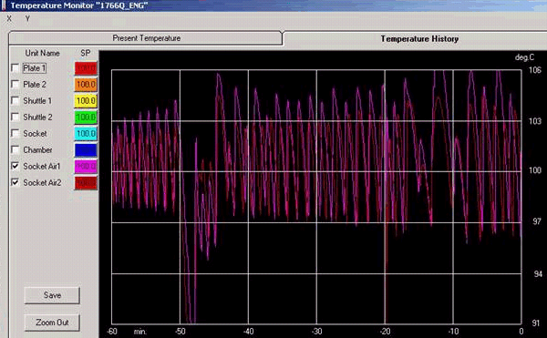
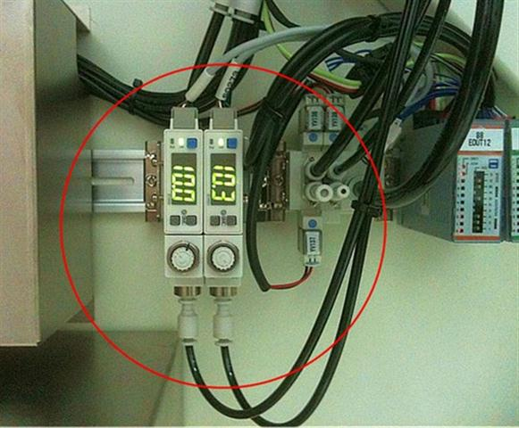

Service History
Subject: NS-8080 is having Socket Air Heater (jet heater) temperature unstable on socket air 1 & 2 upon heating up to 100DegC
Handler Model: NS-8080 (S/N: 181649)
Controller: RC520
Date: 8 Dec 2010
Symptom
ASE NS-8080 is having Socket Air temperature unstable on Socket Air 1 & 2 upon heating up to 100¡„C. (refer to below pictorial)

Temperature not stabilise after heat up for 10 mins.
Did verification on another handler s/n: 181900 and it able to heat up to 130¡„C.

Upon verification, notice that socket air 1 & 2 air flow is control by flowmeter that is locate beside vacuum pump.
Did verify by controlling air flow from flowmeter but it unable to stabilise the temperature.
Would like to check what is the root cause for socket air 1 & 2 temperature unstable upon heating up?
Action
Advise to try OMRON tuning.
Feedback from Terry that H03-NS88 setpoint to 100DegC, socket air heater fluctuate +/- 5 DegC.
Perform Omron utility auto tuning at 100 DegC SP. Auto tuning able to complete but both socket air heaters temperature not stable.
Performed Auto tuning at 130 DegC, both socket air heaters unable to achieve 130 DegC, only reach 112 to 116 DegC.
Check on another handler H08-NS88, found out solenoid valve on the air heater require to trigger if not air will not to supply to air heater.
Perform 130 DegC auto tuning.
Completed auto-tuning and both socket air 1 and 2 temperature stable.
KIV, awaiting for EPSON advises from Hidaka.
Cause
Remarks
This is related to 0275-NS8K.